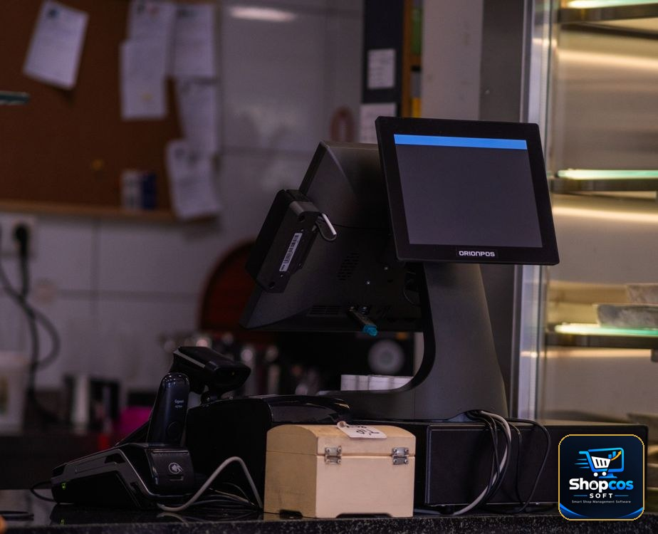

Every Pakistani shopkeeper knows the moment. A regular customer walks in, takes goods worth a few thousand rupees on udhar, and says "likh lo." You reach for the register — or these days, for your phone. The khata app opens, you type the name, you type the amount, you squint at the small screen, and the customer is already walking out while you are still saving the entry.
Phone khata apps were a genuine step forward from the paper register. They replaced torn pages and faded ink with searchable records, and for a shop with twenty or thirty udhar customers, they work fine. But shops grow. At a hundred customers, two hundred, five hundred, the phone starts fighting you: the screen is too small to see a full ledger at a glance, only one person can use it at a time, and the ledger lives on the same device that rings, runs out of battery, and goes home with you at night.
A khata book app for PC solves a different problem than a phone app. It does not just record udhar — it puts the whole ledger on a big screen at the counter, where you, your cashier, and your accountant can all see it, search it, and work in it at the same time. This guide explains what a PC khata actually does, when it beats a phone app, what features matter, and how to move from paper or phone to PC without losing a single entry.
Why the Phone App Stops Being Enough
Nothing is wrong with phone khata apps — they are simply built for one person and a small list. The problems show up gradually, and shopkeepers usually blame themselves for them before they blame the tool:
- You cannot see the whole picture. A phone shows five or six ledger lines at a time. To understand one customer's history — what he bought, what he paid, what is still pending, and since when — you scroll, tap, go back, and scroll again. On a PC screen, the full ledger for a customer sits in front of you in one view, and you can compare ten customers side by side.
- Only one person can work in it. When the phone is in your pocket, your cashier cannot check a customer's balance while you are at the supplier. When it is at the counter, you cannot check it from the back room. A PC khata sits on the shop's counter computer, and staff log in with their own accounts.
- Typing is slow and error-prone. Entering a bill of fifteen items on a phone keyboard, one thumb at a time, takes minutes and invites typos. On a PC, a barcode scanner reads the items in seconds and the bill lands in the customer's khata automatically — no retyping, no transcription mistakes.
- The ledger leaves the shop every night. Your entire udhar record rides home in your pocket. If the phone is lost, stolen, or reset, the ledger goes with it unless you remembered to back it up. A PC system keeps the data on the shop's own computer, with backups you control.
- Reports are an afterthought. Phone apps give you a balance and a list. A PC khata gives you the questions that actually matter: who owes the most, whose balance has not moved in 60 days, which customers always pay late, and how much total udhar is outstanding right now.
What a PC Khata App Actually Does
Strip away the marketing, and a good PC khata has five jobs. Judge any software — including ours — by whether it does all five well.
1. One ledger per customer, complete and searchable
Every customer gets a full ledger: every udhar sale, every partial payment, every discount, dated and itemized. You should be able to search by name, phone number, or even a nickname — because in a real shop, "Chacha Bashir" and "Bashir Ahmed" are often the same person, and the software should let you merge them rather than punish you for it. Opening a ledger should take one search, not a five-minute hunt.
2. Credit limits that enforce themselves
This is the feature that pays for the software on its own. You set a limit per customer — say Rs 10,000 for a regular, Rs 50,000 for a trusted old customer — and when a new udhar bill would cross it, the system warns you at the counter, before the goods leave. Without a limit, udhar grows silently until one customer owes an amount nobody can recover. With a limit, the awkward conversation happens early, when it is still a small amount and a friendly reminder, not a confrontation. Our earlier guide on managing udhar khata covers the recovery habits; the PC limit is what makes those habits enforceable.
3. Payment history and aging, not just a balance
A single balance number hides the truth. Rs 25,000 owed by a customer who paid Rs 5,000 last week is a healthy account. Rs 25,000 owed by a customer who has not paid in four months is a problem. A PC khata shows aging automatically: how much is 0–30 days old, 30–60, 60–90, and 90-plus. That one view tells you who needs a polite reminder, who needs a firm visit, and who should not get more udhar until the old balance clears.
4. Reminders and statements over WhatsApp
The best reminder is the one you do not have to make yourself. A PC khata should generate a clean statement for a customer — opening balance, this month's purchases, payments received, closing balance — and send it over WhatsApp in one click. Customers pay faster when they see their own statement in writing, and you avoid the argument about "kitna banta hai" because the numbers are in front of both of you.
5. Khata connected to billing, not separate from it
This is where a PC khata beats a standalone phone ledger completely. In a phone app, you bill on one device and record udhar on another, and the two never talk. On a PC system, the bill is the khata entry: scan the items, choose "udhar," pick the customer, and the sale, the stock deduction, and the ledger update happen together. No double entry, no missed entries, no end-of-day reconciliation between two different records.
The test before you buy anything: open a customer's full ledger, find his oldest unpaid bill, and print or WhatsApp his statement — all in under a minute, without touching your phone. If the software cannot do that at the counter, it is a notebook with a screen, not a khata system.
Phone App vs Paper Register vs PC Khata
| Paper register | Phone khata app | PC khata app | |
|---|---|---|---|
| Full ledger at a glance | Flip pages | Scroll, 5–6 lines visible | Whole ledger on one screen |
| Who can use it | Whoever holds the book | Whoever holds the phone | Counter staff with logins |
| Credit limit warnings | Memory only | Rarely | Automatic at billing |
| Billing linked | No | No, entered separately | Yes, bill = ledger entry |
| Backup | None | Cloud, if enabled | Shop PC + backup copy |
| Works without internet | Yes | Mostly | Yes, fully offline |
| Best for | Under 20 udhar customers | 20–100 customers, one user | 100+ customers, staff, billing |
Moving From Paper or Phone to PC in One Weekend
The fear that stops most shopkeepers is migration: "mere paas 300 customers ka khata hai, main dobara kaise likhun?" You do not retype history. You move in this order:
- Start with opening balances, not history. For each customer, enter one number: what he owes today. The old register or phone app stays as your history record. From day one on PC, every new sale and payment is recorded properly, and within a month the PC ledger is the one you trust.
- Clean the list first. Merge duplicates ("Bashir" and "Bashir Ahmed"), delete customers with zero balance who have not bought in a year, and confirm phone numbers for your top 30 debtors. One hour of cleaning saves months of confusion.
- Set credit limits on day one. Give every active customer a limit before the first bill. It is far easier to set limits at setup, when nobody is standing at the counter, than to introduce them later in front of a customer.
- Run both systems for one week, then stop. For seven days, record on PC and keep the old register as a cross-check. When the totals match at day closing every evening — and they will, because the PC deducts stock and updates khata from the same bill — retire the register. Shops that run two systems "just in case" for months end up trusting neither.
- Train the cashier, not just yourself. The person who actually bills customers must be able to open a ledger, check a balance, and send a statement without calling you. A khata system that only the owner can operate is a bottleneck, not a solution.

5 Mistakes That Ruin a PC Khata
- No backup routine. A PC is safer than a phone, but it is not magic. Copy the backup to a USB drive every week. A computer can fail; a backup cannot be argued with.
- Everyone using one login. If all staff share one account, you can never tell who gave udhar to whom. Separate logins are not about distrust — they are about knowing what happened, which is the whole point of a ledger.
- Mixing shop and personal udhar. The day you record a relative's personal loan in the shop khata, your business numbers stop meaning anything. Keep a separate personal record, even if it is just a notebook.
- Never reviewing the aging report. A khata you never review is a register with better fonts. Once a week, open the 60-plus-days list and act on it — a reminder, a visit, or a hold on further udhar.
- Recording payments late. A payment recorded three days late is a customer wrongly told he still owes money. Enter payments the moment cash changes hands, while the customer is still in front of you.
When a Phone App Is Still the Right Choice
Honesty matters here. If you have fewer than fifty udhar customers, one person handles all billing, and you do not need stock or billing software yet, a phone khata app is fine — and free ones exist. The PC khata earns its place when the customer list grows past what one screen and one person can hold, when staff start billing, or when you want billing, stock, and khata in one system instead of three separate records. If you are already considering billing software, the khata question answers itself: get the khata that lives inside the billing system, not beside it. Our beginner's guide to barcode systems shows how the counter setup works, and our year-end stock audit checklist shows why a trustworthy ledger makes every other part of the business easier.
The Bottom Line
Udhar is not a side feature of a Pakistani shop — for many shops, it is half the business. The register held it, the phone app digitized it, and the PC khata is where it finally becomes manageable: visible in full, limited before it grows, connected to billing, and backed up where it belongs. Move the ledger to the big screen, and the arguments about "kitna banta hai" get shorter, the recoveries get faster, and the number at the bottom of the ledger finally means something you can trust.
Photo credits: A shopkeeper working on a laptop behind a glass shop counter photo by Thành Đỗ · A hand writing in an open ledger notebook with a calculator photo by Mikhail Nilov · A modern touchscreen point-of-sale system on a small shop counter photo by Doğan Alpaslan Demir — all via Pexels.